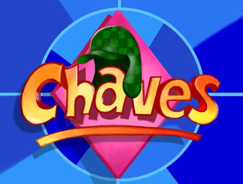

Email:
1. Em que ano a série Chaves chegou ao Brasil? 1 - 1971 2 - 1975 3 - 1978 4 - 1984 5 - 1990 2. Onde o Chaves realmente mora? 1 - Dentro do barril 2 - Na casa número 8 3 - Na casa número 71 4 - Na casa do Seu Barriga 5 - Na escolinha 3. Quantos meses de aluguel o Seu Madruga deve ao Seu Barriga? 1 - 2 meses 2 - 5 meses 3 - 10 meses 4 - 14 meses 5 - 20 meses 4. Qual é o apelido que as crianças deram para a Dona Clotilde? 1 - Dona Florinda 2 - Mestre Linguiça 3 - Bruxa do 71 4 - Serafina 5 - Dona Neves 5. Quem é o filho do Seu Barriga? 1 - Quico 2 - Chaves 3 - Godínez 4 - Professor Girafales 5 - Nhonho 6. O que o Professor Girafales sempre leva para a Dona Florinda? 1 - Sanduíches 2 - Flores 3 - Bonecas 4 - Dinheiro 5 - Brinquedos 7. Qual é o nome da boneca que a Pópis sempre carrega? 1 - Chiquinha 2 - Clotilde 3 - Florinda 4 - Serafina 5 - Neves 8. Qual personagem tem o hábito de beliscar o Quico? 1 - Seu Madruga 2 - Seu Barriga 3 - Professor Girafales 4 - Godínez 5 - Nhonho